Documental · 2025
Entre polvo y sueños
Ellas no solo buscan mineral.
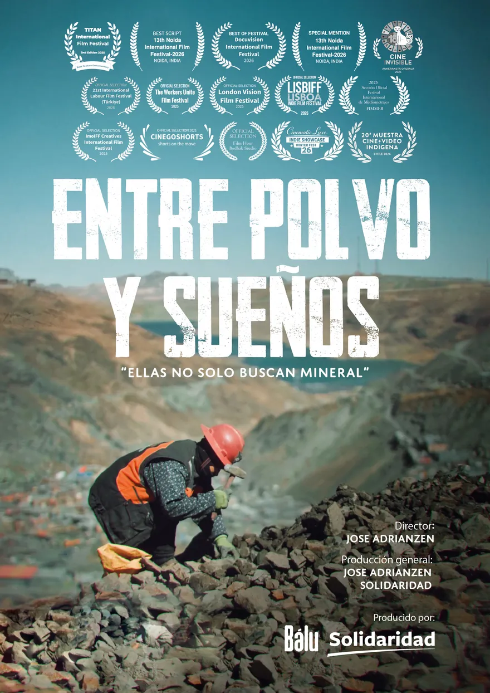
Tres años de rodaje en los socavones y las pampas del Perú, acompañando a un grupo de mujeres mineras. No son mineras informales sin más: buscan formalizarse, que las reconozcan y una vida mejor para los suyos.
La película es un puente entre ellas y el mundo: una historia de lucha filmada a pie de mina, para que su voz llegue lejos.
Perú · Documental · Digital 2K · Español · Subtítulos en francés, inglés y turco
- Dirección
- Jose Adrianzen
- Guion
- Jose Adrianzen
- Producción general
- Jose Adrianzen y Solidaridad
- Producido por
- Bálu · Solidaridad
- País
- Perú
- Formato
- Digital 2K
- Idioma
- Español
- Subtítulos
- Francés, inglés y turco
APremios
- Mejor documentalTITAN International Film FestivalSídney, Australia · 3.ª edición · 2025
- Mejor guion13.º Noida International Film FestivalNoida, India · 2026
- Best of FestivalDocuvision International Film FestivalLewes, Delaware, EE. UU. · 2026
- Mención especial13.º Noida International Film FestivalNoida, India · 2026
BSelecciones
- 21.º International Labour Film FestivalSelección oficial · Türkiye · 2026
- The Workers Unite Film FestivalSelección oficial · Nueva York, EE. UU. · 2025
- London Vision Film FestivalSelección oficial · Londres, Reino Unido · 2025
- LISBIFF Lisboa Indie Film FestivalSelección oficial · Lisboa, Portugal · 2025
- Cine Invisible “Film Sozialak”Selección oficial · Bilbao, España · 2026
- FIMMER · Festival Internacional de MediometrajesSección oficial · Manzanares El Real, España · 2025
- ImoIFF Creatives International Film FestivalSelección oficial · Imo, Nigeria · 2025
- Cinego Shorts · Shorts on the MoveSelección oficial · Karachi, Pakistán
- Film Hour · Bodhak StudioSelección oficial · India
- Cinematic Luxe Indie ShowcaseWinter Fest 26 · Cincinnati, EE. UU.
- 20.ª Muestra Cine + Video IndígenaSelección oficial · Chile · 2026
CFotogramas
Los mismos cuadros de la pared de la portada. Toca uno para verlo completo.
DRodaje
Cortometraje · Thriller psicológico · 2023
ECO
Está en circuito de festivales y todavía no se estrena, así que por ahora no se puede ver en línea. Pronto estará aquí.
Una casa. Un secreto.
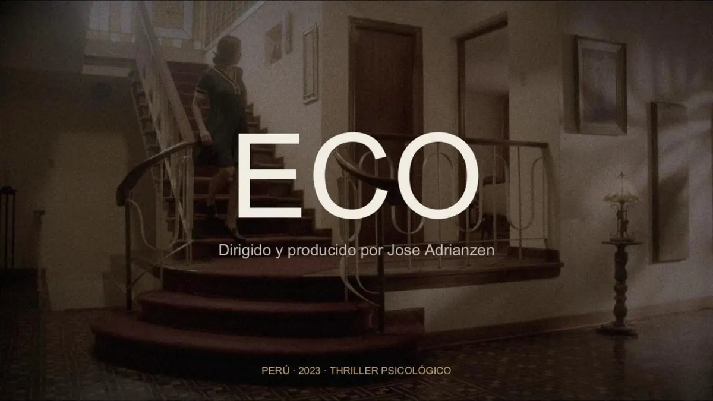
César, un psiquiatra respetable, esconde una doble vida tras su consulta y su matrimonio. Cuando Victoria, su joven paciente y amante, reúne el valor para revelar la verdad, el frágil equilibrio de su mundo se rompe. Entre espejos, secretos y sospechas, la esposa a la que todos creen frágil resulta ser la más lúcida.
Perú · 2023 · 13 min 12 s · Digital 6K · Español
- Dirección
- Jose Adrianzen
- Guion
- Jose Adrianzen y Matilde Carrión
- Producción
- Jose Adrianzen
- Fotografía
- Fabricio Raciti
- Arte
- Gonzalo Veratudela
- Dir. de actores
- Aníbal Lozano
- Montaje
- Jose Adrianzen
- Sonido
- Casko Pérez
- Música
- Augusto Madueño
AReparto
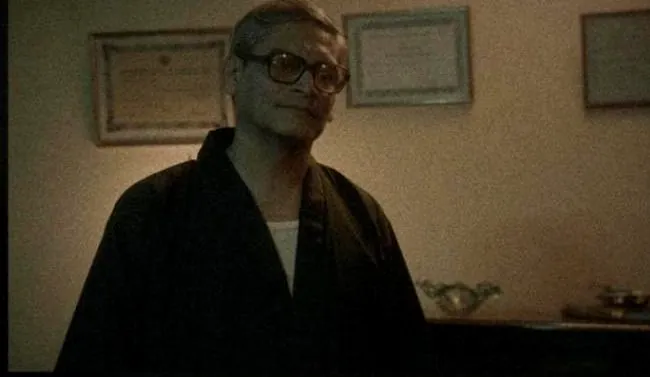
CésarCristian Esquivel 
CristinaFiorella Luna 
VictoriaYamile Caparó 
La madreMotta
BProgresión de luz
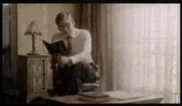
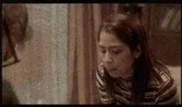
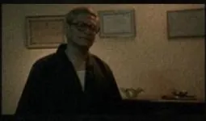
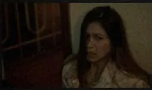
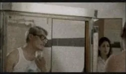
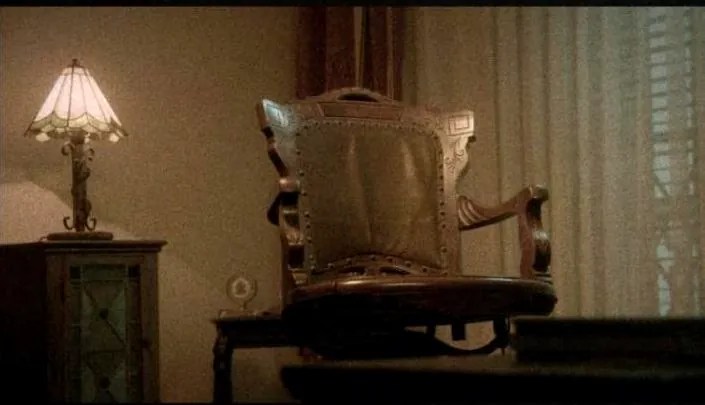
CRodaje

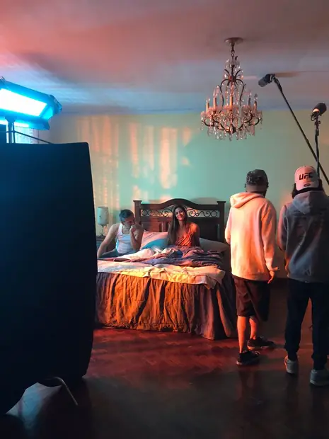
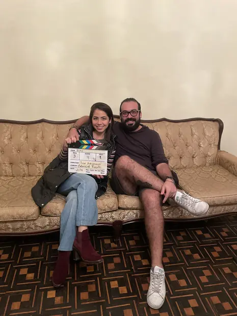
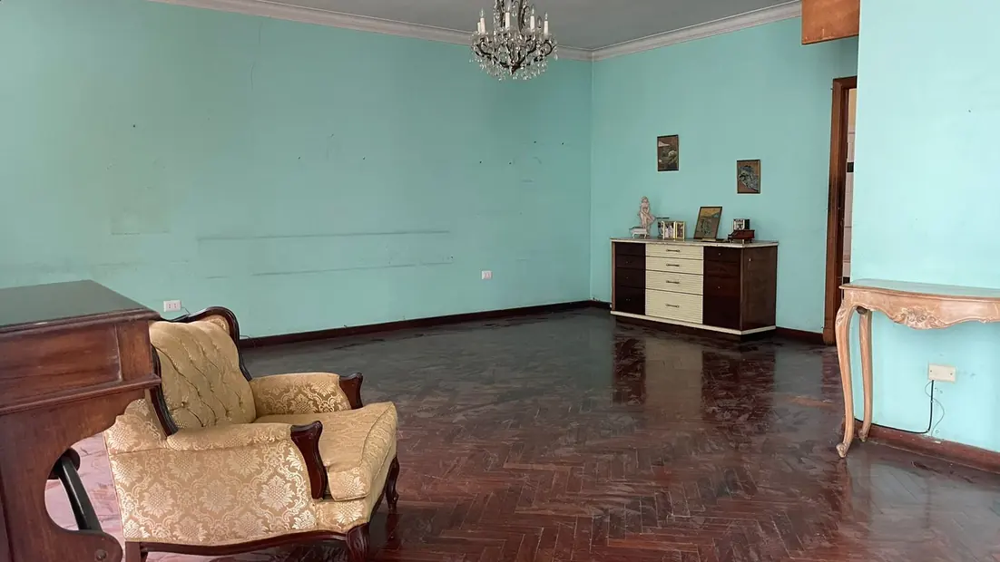


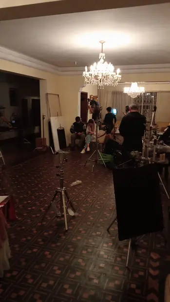

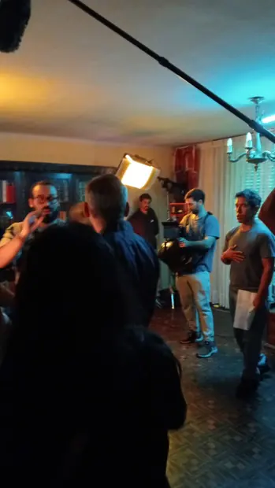


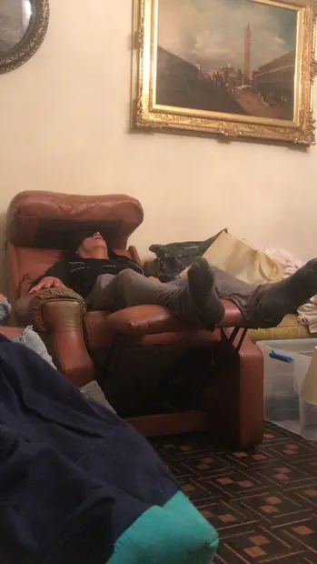

Sobre el director
Jose Adrianzen
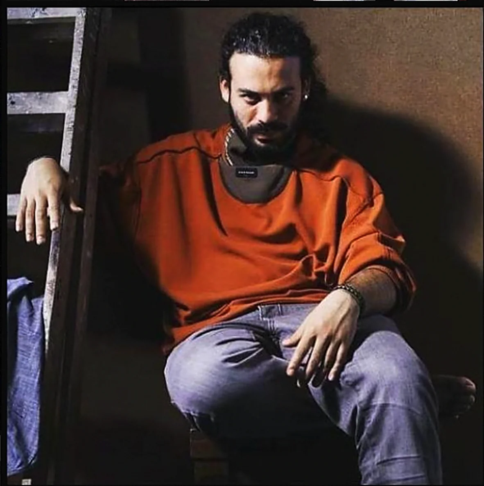
Desde pequeño, el cine y la política fueron mis dos grandes pasiones. Al inicio quería ser presidente, así que estudié derecho para entender a fondo las leyes y el funcionamiento del Estado. La vida me llevó por otro camino: en el cine encontré una forma más poderosa de generar impacto y de contar las historias que merecen ser escuchadas.
La curiosidad me ha llevado a recorrer casi todo el Perú, buena parte de Sudamérica y distintos rincones del mundo. Esos viajes me enseñaron a mirar realidades muy distintas a la mía y me confirmaron algo: el cine es una herramienta de transformación social. Con esa convicción decidí dedicarme por completo a la creación audiovisual.
Tengo estudios en cine y en actuación. Quería aportar a la industria del cine también desde la gestión: producción, financiamiento y distribución. Por eso decidí estudiar ingeniería empresarial.
En los últimos años he trabajado con varias ONGs, contando historias que suelen quedar en el olvido. Terminé de rodar el cortometraje ECO, hoy en circuito de festivales. Pero el proyecto que ha marcado mi trayectoria es Entre polvo y sueños: tres años de mi vida para dar voz a las mujeres mineras del Perú y reivindicar su lucha.
- Base
- Lima, Perú
- Formación
- Cine y actuación
- Gestión
- Ingeniería empresarial
- Antes
- TV, publicidad y ONGs
Siempre he creído que las personas valen mucho y que, si es necesario, hay que llegar hasta el último rincón para visibilizarlas.
AEn cámara y fuera de ella

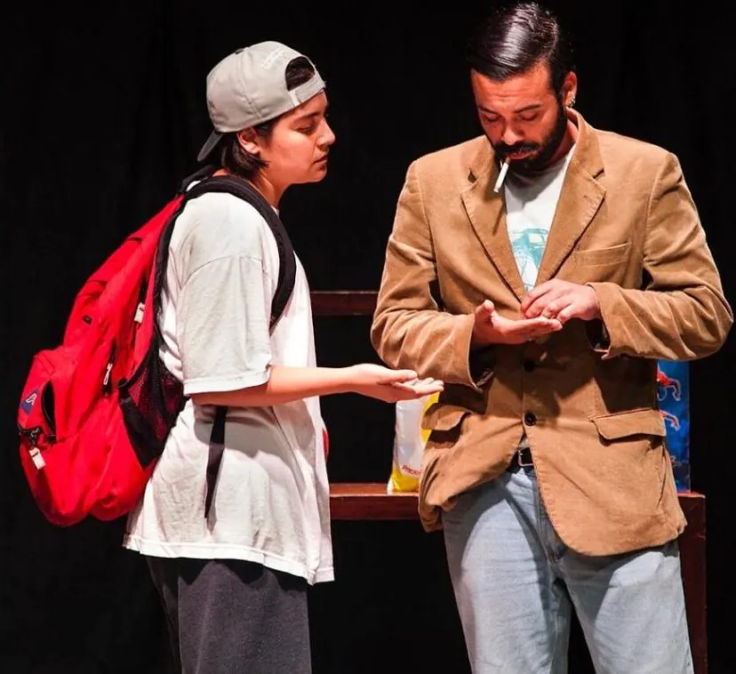
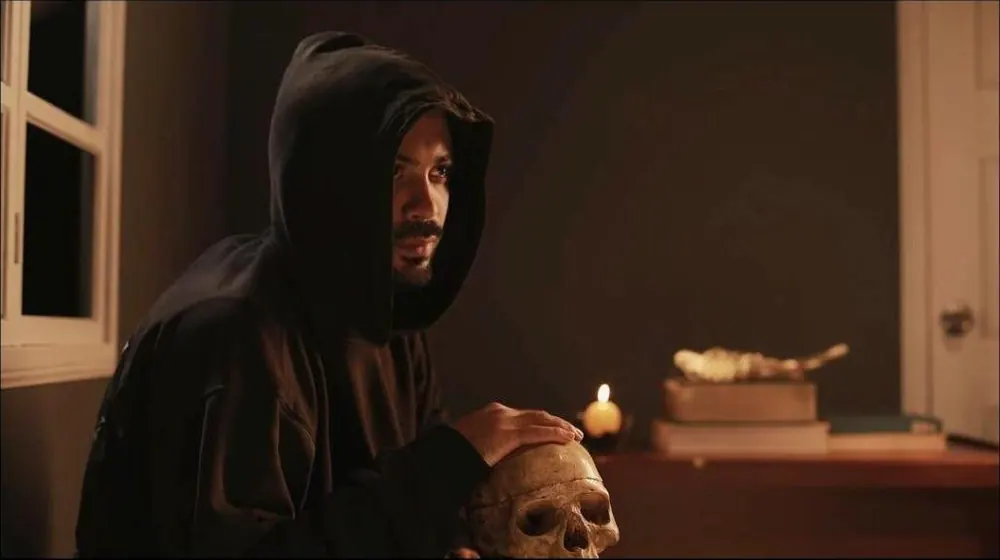

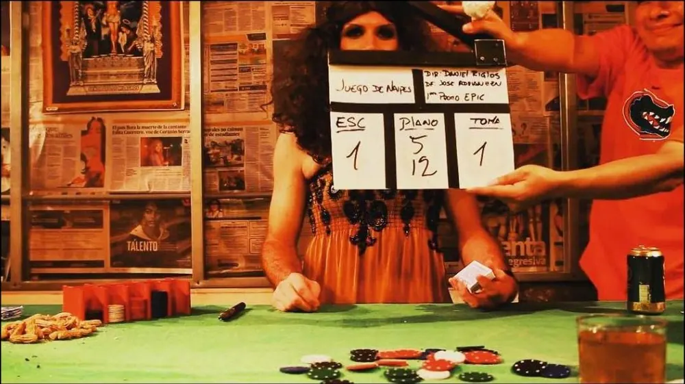
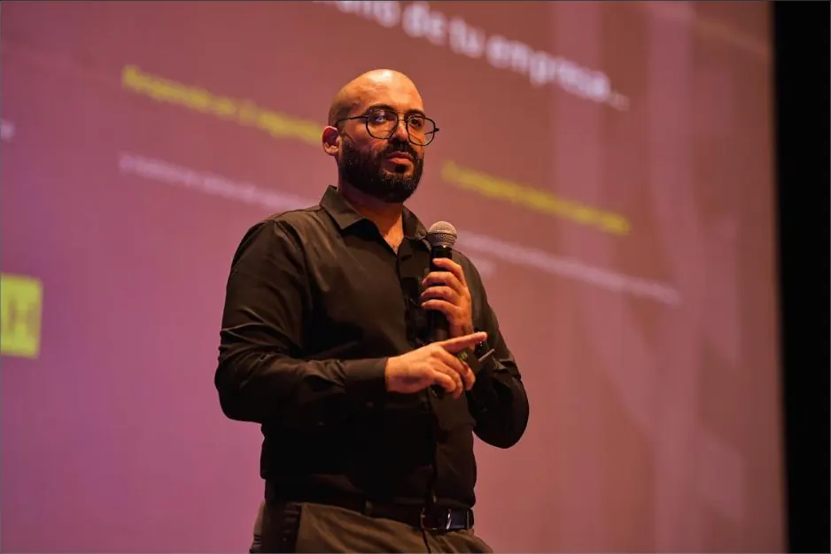
Proyectos, festivales y colaboraciones
Contacto
Lima · Perú